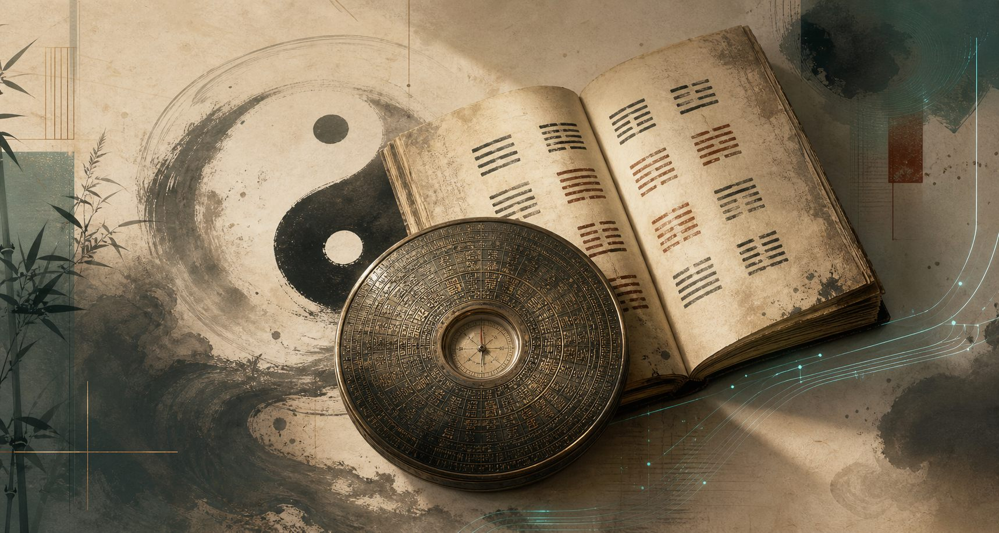

文化解读 · AI 互动 · 生活建议
AI 国学工具箱
把六十四卦、筊杯、手相面相、风水罗盘、黄历宜忌和国学内容库整合在一个可互动的页面里。语气保留传统文化的诗性，结论保持现代产品该有的边界感。
易经算卦
支持时间、铜钱、数字和手动摇卦，展示本卦、变卦、互卦、错卦、综卦与分领域解读。
起卦方式
已得 0 / 6 爻
此处用传统象义生成文化化建议，不作确定性预测。
掷圣杯 / 筊杯
虚拟掷杯、三次规则与问题解释，结果包含圣杯、笑杯、阴杯。
民俗互动体验，适合做自我提问与情绪整理。
手相 AI
上传手掌照片后，页面会生成生命线、智慧线、感情线、事业线的传统文化解读示例。
选择一张手掌照片
仅供娱乐和传统文化参考。请勿上传他人照片或包含敏感信息的图片。
传统手相解读
面相 AI
围绕脸型、额头、眉眼、鼻相、嘴相做文化化描述，避免身份、种族、健康等敏感判断。
选择一张清晰正面照
不做身份识别，不推断敏感属性，不替代任何专业评估。
文化化面相解读
风水罗盘
模拟指南针、八卦方位、二十四山与九宫飞星建议，支持户型图上传预览。
上传户型图后可叠加方位建议
道教 / 国学内容库
阴阳五行、天干地支、八卦六十四卦、黄历节气与民俗方位的轻量知识卡片。
AI 问卜聊天
结合当前时间、起卦结果、五行语汇与传统文化表达，给出适合日常决策的启发式回答。
建议按“启发、提醒、行动清单”理解，不宜当作唯一决策依据。